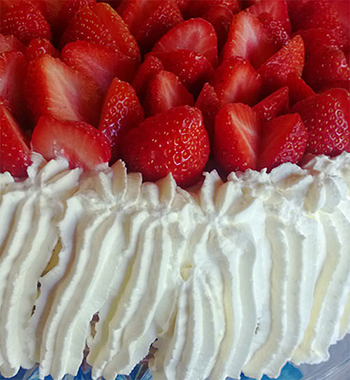

Dig's Cafe
Dig's CafeTervetuloa Dig's Cafeen!
Kahvila Dig's Cafe sijaitsee Pasilan sykkeessä Ratapihantiellä Haaga-Helian campuksella.
Uunituoreet leivonnaiset
Leivomme itse päivittäin pullat, piirakat ja kakut. Tarjolla on aina laaja valikoima itsetehtyjä herkkuja, on vakiintuneet suosikit unohtamatta tietenkään vaihtelua ja kausittaisia makuja.
Kahvit
Valikoimassamme on 35 erilaista kahvia aina perinteisestä kahvista espressokahvien kautta erilaisiin maustekahveihin.
Kahvivalikoimamme:
- Espresso
- Cappucino
- Cafe Latte
- Latte Macchiato